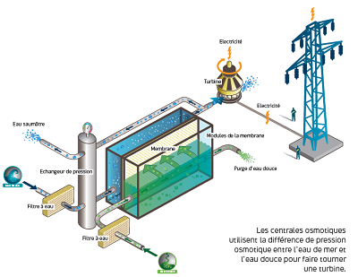

Pétrole à base d'air
Ce carburant de synthèse, bien plus propre que celui obtenu à partir de pétrole fossile, serait compatible avec les moteurs d'aujourd'hui.
Une petite entreprise située en Angleterre serait d'ici 15 ans dans la mesure de fabriquer des raffineries de pétrole artificiel en utilisant de l'air et de l'électricité, pour une utilisation industrielle, car pour le moment, le projet reste trop coûteux.

Energie osmotique
L’énergie osmotique est basée sur un phénomène physique : l’osmose.
Lorsque de l’eau salée et de l’eau douce entrent en contact toutes les deux séparées par une membrane, les molécules de sel attirent l’eau douce à travers celle-ci.
Cela créer une surpression sur l’eau salée, qui est alors canalisée vers une turbine
Cependant les rendements restent relativement faibles : 3w/m² de membrane.
Les ingénieurs à l’origine du projet, travaillent en ce moment sur une usine d’un à deux MW, ce qui nécessiterait une membrane de 200 000 m2.